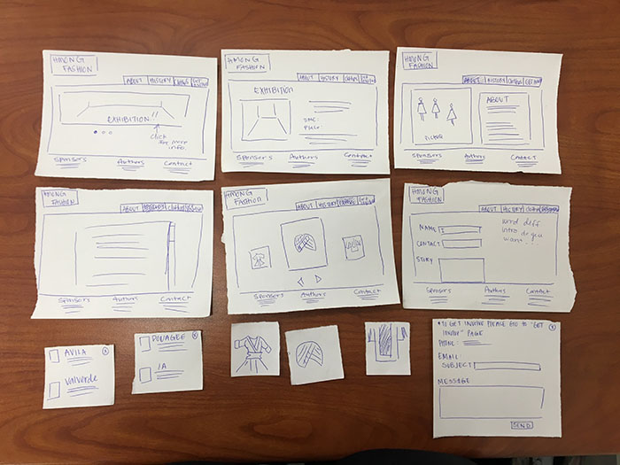
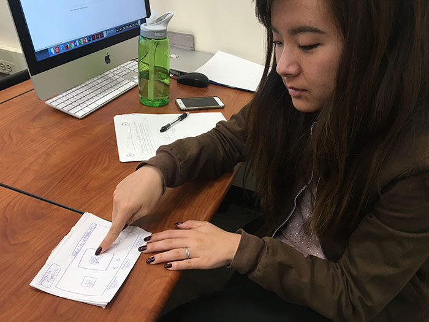
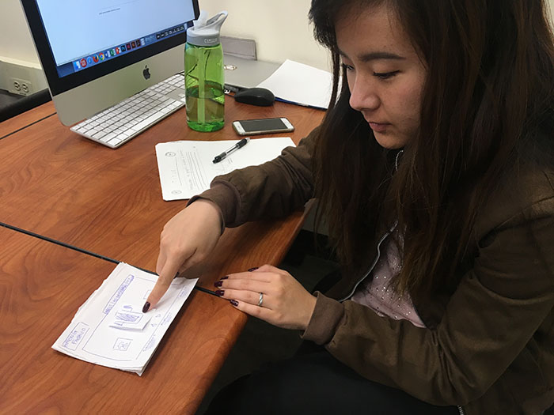

In this paper prototype I created a rough version of what the website is expected to look like. From the first experience with the users I realized that I left out many of the simple interaction that is needed for the functionality of the web page for example a close button. I also found out that my "contact" and "get in involve" were wuite redundant and the user will not know the difference. After the first test, I tried my prototype with a different user and this user found it a lot simplier and the functionality made more sense to her. I did notice that the user did not click on the banner on the first page for news, so that's something I have to indicate if the banner is interactive or not.


